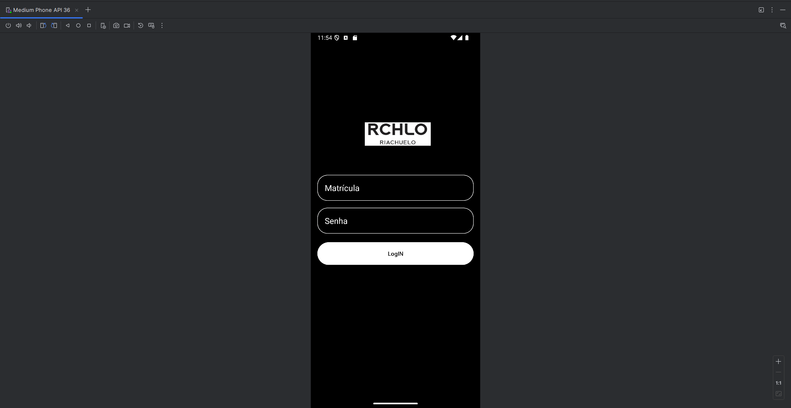

Meus Projetos

Desenvolvedor Full-Stack
HTML | CSS | JavaScript | Python | SQL | MongoDB | C# | Scrum | UML
Sou um jovem Desenvolvedor ainda buscando crescer na área, recentemente descobri duas áreas as quais quero seguir, que são: banco de dados e desenvolvimento BackEnd. Mas aceito qualquer desafio para me especializar mais a cada dia, sempre foi apaixonado por tecnologia e por observar o desenvolvimento de projetos, tenho experiência com alguma linguagens bastante utilizadas no mercado como Python, programação WEB (HTML5, CSS3 e JavaScript), C# entre outras listadas na aba "HABILIDADES", apaixonado por desenvolver softwares de diversas formas e abertos a novos desafios a todo momento.